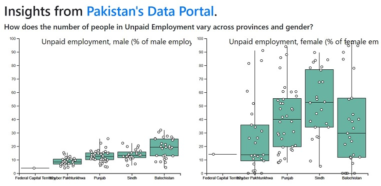

My product, program, and policy leadership
— grounded in deep technical understanding —
builds safe and equitable digital futures.
Hover over or tap a highlighted country to see impact.
Size of digital connectivity portfolio under management, for expanding broadband access and secure digital infrastructure.
Connectivity · Global · USAID
Engineers trained in emerging broadband technologies - nearly half of them women - under a workforce development initiative.
Connectivity · Philippines · USAID
Rural patients covered by pilot of private 5G and OpenRAN connectivity telehealth solutions.
Connectivity · Brazil · USAID
Increase in task success rate of digital ID-enabled public services, after user research and design recommendations.
Digital Public Infrastructure · Rwanda, Côte d'Ivoire, and South Africa · Tony Blair Institute
Built critical decision-making tools, including trade-off matrices and dynamic decision trees, to assist government users in generating tailored climate tech roadmaps and inform Sierra Leone's national climate strategy. Also, redesigned early warning data pipelines to power locally relevant AI/ML ("small AI") for disaster-prone, low-connectivity areas.
Climate Tech · Sierra Leone · Tony Blair Institute
Additional new investments, based on an evaluation of digital inclusion gaps across 25 emerging markets.
Digital Public Infrastructure · Global · IFC
Growth in digital payment accounts, through open APIs and inclusive, commercially-led partnerships with fintech providers.
Digital Public Infrastructure · Pakistan · Karandaaz
Savings delivered as part of automation of 20+ HR business processes for U.S.-based financial services client with 22,000+ employees.
Enterprise Technology · United States · Aon Hewitt
Partner and Connectivity & Digital Access Lead
Co-founded a digital transformation consultancy with former USAID colleagues, and leads its connectivity and digital access practice.
Digital Connectivity Lead
Led a $6.5M digital connectivity portfolio advancing international broadband access and secure digital infrastructure technologies globally.
Tech Policy Lead
Led research, advisory, and product strategy initiatives focused on foundational digital public infrastructure, digital identity use cases, and connectivity.
Digital Policy and Portfolio Researcher
Developed investment and advisory recommendations to encourage private-sector participation in expanding inclusive digital financial services.
Senior Associate
Scaled a $16M fintech research and advisory portfolio backed by the Bill & Melinda Gates Foundation and the UK Government.
Digital Inclusion Consultant
Spearheaded the strategic incubation, national policy design, and structural rollout of a standalone digital inclusion vehicle.
Systems Analyst → Tech Lead
Led HRIS implementation, process automation, systems integration, QA coordination, and client-facing technology delivery for large commercial clients.
In a fast-moving AI and tech landscape, staying effective demands hands-on experimentation. These self-directed projects reflect how I continuously build, test, and adapt outside of formal client engagements.
Designing evaluations with synthetic data and adversarial inputs to test whether model outputs hold up. Every public-sector AI rollout needs this.
TrAIvel Concierge, a group-travel planner that grounds its suggestions in real data and was tested with automated and human evaluation. And an n8n workflow that turns unstructured emails into structured records, with human review built in.
This site, redesigned with Claude Code: brand brief, clean-up, and design, with security rules set before any code changed.

Data Driven Pakistan, a four-part series built on public data, and an analysis of funding under BEAD, the US federal broadband program.
Communication, technologies et développement, no. 16 (UNESCO Chair)
Tony Blair Institute for Global Change
Articles and notes
Working on connectivity, digital public infrastructure, or AI for development? Get in touch.